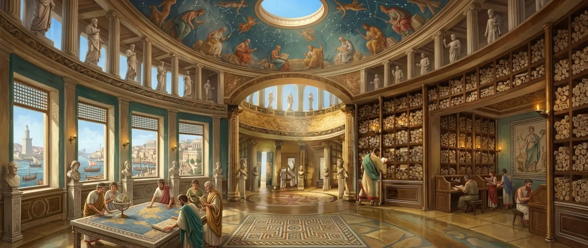

A small library you can carry
About 180GB of offline archives sit on a drive here: Wikipedia, iFixit, field medicine manuals, a few others, kept for exactly the situation we keep designing around. They opened fine. Nobody could ask them anything. Corpus is the rebuild that made that knowledge queryable: one portable file per subject, fast to search once running, readable without the tool that wrote it. It is our own reference library first, and it is internal tooling, so there is nothing on this page to download.

Owning the knowledge is not the same as reaching it
A ZIM archive is the offline internet in a box, and as a distribution format it is superb. As a knowledge store it is close to unusable. The reader is slow, the search index that ships inside cannot be reranked, and nothing can query the contents programmatically. We had the knowledge and no good way to ask it a question.
We rebuilt it because the ZIM design is aged and because the tools we use shape how we work. Patching the reader would keep the same shape: files you open and scroll. We wanted to redo the idea around asking questions: type a few words, get a ranked answer in milliseconds, follow the links, stay offline the whole time.
The budget was one laptop. Six cores, 16GB of RAM, no usable GPU, and no server to lean on, because a hosted index would defeat the entire point of an offline library. Every approach below had to survive that machine.
Three things we built and then deleted
None of these were dismissed on paper. Each one was built, measured, and then removed, and the measurement is the reason it lost. The full trail lives in the project notes. These three shaped what Corpus became.
Query the ZIM archives directly and skip the rebuild entirely.
A ZIM is a fine distribution format and a poor query substrate. The text is locked inside HTML, the index that ships with it ranks how it ranks, and there is no way to blend in a second signal or hand results to anything else. Ranking was the whole problem, so an approach that fixed everything except ranking fixed nothing.
A custom container format, a proprietary framing, or a compiled extension for the rebuilt store.
Plain SQLite cost nothing and bought everything. Any SQLite binding in any language opens a Corpus roll, and the output outlives the project that made it. A clever container would have tied every reader to our tooling, which is the opposite of a library you can carry.
Keep the images. Version 0.1 already shipped them.
Version 0.1 stored 408,876 images in a 2GB sidecar, and a sample killed it. Across the full Wikipedia archive the median image is 0.05 megapixels, and not one of 220 sampled reached 2MP. Kiwix downsamples everything on the way in, so the archives cannot supply a usable picture at any price. Gigabytes were being paid for thumbnails nobody could read, so the sidecar went. A small curated picture set lives in its own file instead, and the text stands on its own.
Film, projector, canvas
Think of Corpus as a small local library with three parts, each replaceable without touching the others. Film is the rolls: one self-contained SQLite file per subject, Wikipedia, iFixit, field medicine manuals, thirteen in all. Loading a subject means loading a roll, and one roll on a stick still works on its own. Projector is the librarian: a small daemon that holds the rolls open and answers one stable API over local HTTP, in milliseconds once running. Canvas is the reading desk: a plain web page, a global hotkey that gives a search box from anywhere, an A to Z shelf for browsing, and permalinks that survive.
We built it for students, for researchers who wander far from the signal, and for anyone who values self sustenance, including with information. A school or a learning center can keep one copy as a reference source that needs no subscription and no connection. Copy the files over, start the projector, ask questions. Running needs stock Python and SQLite and nothing else. Building new rolls is the only part that needs extra packages.
Version 2.0 is the Corpus rename and three changes worth naming. The projector is now standard library only, so reading takes no third party code at all. The funnel accepts a ZIM archive or a folder of markdown notes and lands both in the same shape, so personal notes become a roll beside Wikipedia. And browsing sits beside ranked search: an alphabetical door through every title, plus a curated shelf of pictures with credits, for the moments when wandering beats querying.
The same API serves people and local AI agents. Small models carry little information on their own, but pointed at a good source they help with learning: definitions, steps, context, follow up questions. Both the page and an agent ask the daemon the same way, over the same frozen v1 endpoints, with no cloud and no upload. A terminal client and an agent bridge are the natural next clients, which is why the API was built before either of them.
- Film: one self-sufficient SQLite file per subject, plus an optional deep file for full body search, plus one shared picture file
- Projector: a small daemon on local HTTP with a frozen v1 JSON API, standard library only to run, no auth so trusted networks only
- Canvas: a plain web page, a global hotkey search box, A to Z browse with permalinks, and a curated shelf with credits
- Ranking: text match multiplied by an offline importance score from the archive link graph, with progressive relaxation when titles match nothing
- Funnel: ZIM archives and folders of markdown notes both build to the same shape, so personal notes sit beside Wikipedia
- Same API for people and local agents, so a small model pointed at a good roll helps with learning offline
- Checkpointing every 50,000 documents or two minutes, plus a preflight that projects size and refuses to start when the disk cannot hold it
Build measurements, and what they are not
This site runs no analytics, so there are no traffic, engagement or enquiry numbers on this page and none have been estimated. What follows are build and engineering measurements taken on the machine that ran the pipeline. They should be read as stated measurements rather than proven ones, for the reason given directly underneath them.
Rebuilt from a 3.3GB archive of 894,836 entries into 82,269 documents, in about three minutes. Stated measurement from the build.
A side effect of storing the text and throwing away the navboxes, citation furniture, duplicated markup and images. Never the goal. Stated measurement.
Measured locally on the machine that built it. Stated measurement, and nothing on this site exercises it.
Wikipedia, iFixit, medicine, travel, manuals and more: 4.36 billion words in 33.9GB from 68.5GB of source. Stated measurement.
408,876 images in a 2GB sidecar were deleted after sampling found a median of 0.05 megapixels and not one of 220 samples above 2MP. Stated measurement.
13,243 of them, kept verbatim and labelled rather than silently rewritten, so the loss can be queried. Stated measurement.
The one number here you can check yourself. Corpus appears on this site only as a written account. There is no public code, no sample file and no download.
Everything above except the last figure is a measurement taken on one laptop and reported by the person who took it. A reader cannot reproduce a single one of them, because Corpus is internal tooling: there is no public repository, no demo, no sample file and nothing downloadable anywhere on this site. That is the opposite of Sprite and the Arcade, which a visitor can open and poke at directly, and it is worth saying plainly rather than dressing the page to imply otherwise. No visitor-side outcome could be reported even if we wanted to, because this site runs no analytics at all. The fix, and it is an owner action rather than a claim: publish the roll schema and one small sample file, so a reader can open it with any SQLite binding and verify the central claim, that the format is plain and readable without the tool that wrote it. Until that exists, the format position is an argument, not a demonstration.
None of this can be checked by the person reading it
Every figure in the section above was measured. Not one of them can be verified by anyone else. Corpus is internal tooling: there is no download, no sample file and no published schema, so the claim this page rests on, that a large archive becomes small portable rolls that answer in milliseconds, has to be taken on trust. On a site whose argument is that numbers should be checkable, this is the weakest page here, and it is weakest exactly where it is loudest.
The measurements are also one machine and one run. They were taken on the machine that ran the pipeline, which the section above says in as many words. That makes them stated rather than proven. A different disk would move the build times, and a different corpus would move everything.
The rejection trail has the opposite problem. Three approaches were built and deleted, and that is useful, but the evidence for each one is a sentence describing a measurement rather than the measurement itself. The full list with numbers lives in the project notes, not here, because this page should read as a library first and a build log second.
Making the central claim runnable
One change would fix most of the section above, and it is the only one worth listing.
- Publish the schema for a Corpus roll, so the shape of the thing is inspectable without the pipeline
- Publish one small roll built from a public source, so the milliseconds can be run rather than read
- Report the build figures from a second machine, so they stop being one measurement